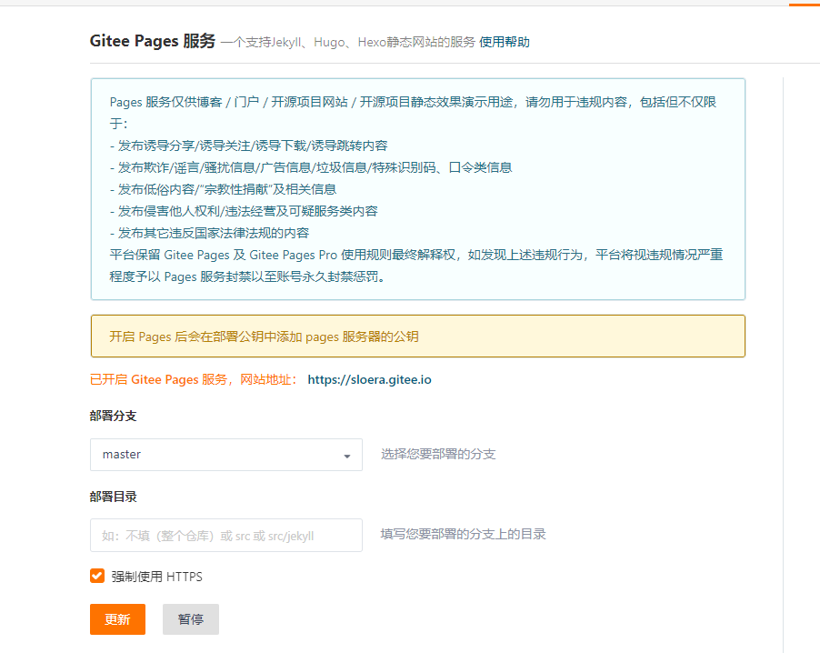
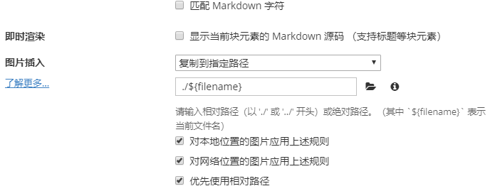
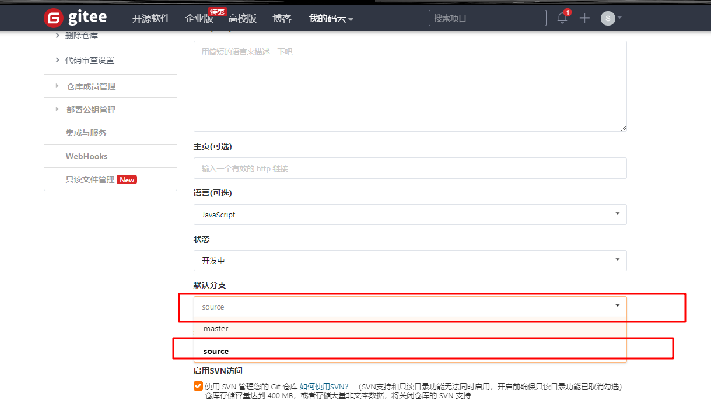

介绍hexo及gitee的pages服务搭建个人博客过程。含如何引入图片、git新建分支保存md源文章。
参考地址：https://blog.csdn.net/cungudafa/article/details/104260494
工具
-
node.js
-
git
配置见{% post_link git “git配置文章” %}
|
|
hexo博客模版
-
新建
root目录。存储所有markdown文件及生成的html1 2 3 4 5 6$ pwd /j/data/gitee $ mkdir sloera $ cd sloera/ $ npm -v 6.13.4 -
安装相关依赖
1 2cnpm install -g hexo-cli cnpm install hexo-deployer-git --save -
初始化
1 2 3hexo init #下载主题耗时 #卡到安装依赖时 Ctrl+C cnpm install -
启动测试
1 2 3 4 5hexo clean hexo g hexo s #测试三连 hexo clean && hexo g && hexo s -
gitee配置
-
新建一个仓库名与码云登录名一致的仓库
选择开源：公开；语言：JavaScript
-
-
hexo配置
-
修改hexo配置
修改
_config.yml1 2 3 4 5deploy: type: git repo: git@gitee.com:sloera/sloera.git branch: master ###注意`:`后有空格 -
部署
1hexo g --d #一键部署 -
开启giteePage功能

-
与typora编辑匹配图片
-
首先确认**_config.yml中有post_asset_folder:true**。
-
开启后，将图片放入文件名同名目录中即可引用。
-
修改typora图片复制操作，用以匹配
post_asset_folder
-
安装 hexo-asset-image
1cnpm install https://github.com/CodeFalling/hexo-asset-image --save
-
-
-
主题配置
1 2cd sloera git clone https://github.com/theme-next/hexo-theme-next themes/next
hexo相关操作
-
相对路径引用的标签插件
1 2 3 4 5{% post_link 文章文件名（不要后缀） 文章标题（可选） %} {% asset_path slug %}   #如 配置见{% post_link git配置 %}正确的引用图片方式是使用下列的标签插件而不是 markdown ：
1 -
引用自定义文件
将文件复制到文件同名目录下。以如下方式引用
1[PortableGit-2.23.0-64-bit.7z.exe](img/PortableGit-2.23.0-64-bit.7z.exe) -
管理博客源码
-
创建一个
source分支存放源码，并更改为默认分支
在
管理>基本设置>默认分支中切换为新建的分支 -
初始化仓库，添加远程
1 2 3 4 5 6 7git init git remote add origin git@gitee.com:sloera/sloera.git git add . git commit -m "博客源文章" git push -f origin master:source #首次为从master创建分支，包含静态网页，需要使用-f强制覆盖 #master代表本地分支，source代表远程分支名 #如推送失败，通过4跟踪非同名分支解决
1 2 3 4 5 63. 禁止转换回车换行符 ```sh git config core.autocrlf #查看当前配置 git config core.autocrlf false #将设置改为false-
默认跟踪远程非同名source分支
1 2 3 4 5git branch -u origin/source #指定当前分支跟踪远程source分支 git config --local push.default upstream #指定可以推送到远程不同名分支 git add . git commit -m "默认分支测试" git push
-